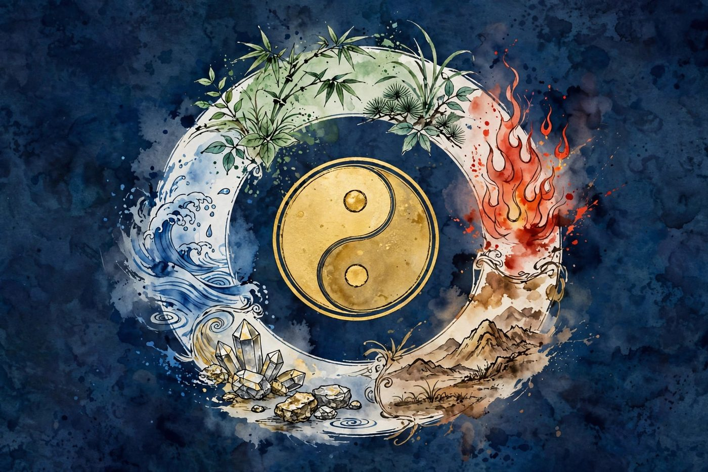

Theoryトップ ＞ 気功理論
気功理論 ― 気功を中医学の言葉で読む
気功の実践には、動作や呼吸の形だけでなく、その背後にある「身体の捉え方」があります。この柱では、気功を説明するときに使われてきた伝統的な概念――精・気・神、丹田、周天、三調、意守――を、中医学の理論と照らしながら整理します。いずれも伝統的な枠組みの紹介であり、現代医学の概念とは別の物差しであることを、最初にお断りしておきます。
まず正直な前提 ― 「気功理論」は一つの体系ではない
「気功理論」と呼ばれるものは、誰かが一から設計した一枚岩の体系ではありません。古代の導引（身体を動かす養生法）、道家の内丹（身体の内側で精・気・神を練る修行）、そして中医学（鍼灸や漢方の土台となる医学理論）という、時代も目的も異なる伝統の概念が、長い年月の中で重なり合ってできたものです。流派によって同じ言葉の意味が少しずつ違うのは、そのためです。この柱では、各概念について「どの伝統の文脈の話か」をできるだけ明らかにしながら紹介します。
柱の地図
中医学の理論との関係
この柱の各論は、当サイトの「中医学の理論」と対になっています。気や臓腑の基本は「気血津液論」「臓腑論」に、巡りの通り道は「経絡論」に土台があります。気功理論は、その中医学の身体観を「自分の身体で練る実践」の側から組み直したもの、と捉えると分かりやすくなります。逆に言えば、気功の言葉だけを切り取って医学の代わりに使うことはできません。症状の判断は、あくまで医療機関と中医学の弁証の領域です。
読み方の約束
- 伝統的な概念は、概念として紹介します ― 丹田や周天は、解剖学で指し示せる実体ではありません。先人が身体の感覚を整理するために作った「地図」として読みます。
- 効能は断定しません ― 「この実践で病気が治る」とは書きません。伝統の中でどう位置づけられてきたかの紹介に徹します。
- 危うさも隠しません ― 行き過ぎた実践の不調（練功偏差）についても、伝統の側がどう説明し、どう戒めてきたかを併せて紹介します。
理論を学ぶ意味
では、実践するだけなら、理論は要らないのでしょうか。伝統の答えは「要る」です。第一に、理論は実践の「扱い方」を教えてくれます。意守は軽く、段階は飛ばさない、偏差の兆しがあれば休む――こうした安全の原則は、すべて理論の側から来ています。第二に、理論は感覚の「置き場所」になります。実践中に生じる温かさや重さといった感覚を、精・気・神や気機の言葉で静かに位置づけられると、感覚に振り回されずに済みます。第三に、理論は中医学との共通言語になります。鍼灸や漢方の専門家と自分の実践について話すとき、同じ言葉で話せることは大きな助けです。逆に、理論を「特別な力の証明」のように使うことは、この柱の意図ではありません。理論は地図です。地図は歩くためのもので、歩いたことの代わりにはなりません。
各論の読み進め方
読み進める順序に決まりはありませんが、土台から積むなら「精・気・神」→「気の種類と働き」→「丹田論」→「周天論」の順が、概念の階段として自然です。実践寄りの関心が強い方は、「三調の理論」「意守の理論」から入っても構いません。そして、どの順で読むにしても、「練功偏差の理論」だけは早めに一度目を通しておくことを勧めます。安全の原則を知っていることが、長く穏やかに続けるための前提だからです。
実践の形は「功法ガイド」、実践の作法は「調身・調息・調心」をご覧ください。解説：抱元（平賀辰人）｜鍼灸師・臨床30年・武術45年。
現代からの見方
この理論ページ群で扱う精・気・神、丹田、周天といった概念は、近代以前に形作られた伝統の身体観の言葉です。現代の解剖学や生理学に、直接対応する実体が見つかっているわけではありません。各論では、伝統の説明を省略せずに書いたうえで、「現代からの見方」として、現代の知見との重なりと隔たりも併記します。伝統の理論は実践を組み立てる設計図として、現代の知見は安全と限界を見定める物差しとして、別の役割で読んでください。
このページは、中医学の伝統的な考え方を紹介する情報提供です。診断や治療の案内ではありません。症状のある方は、医療機関での診察を土台にしてください。
Related ― あわせて読みたい